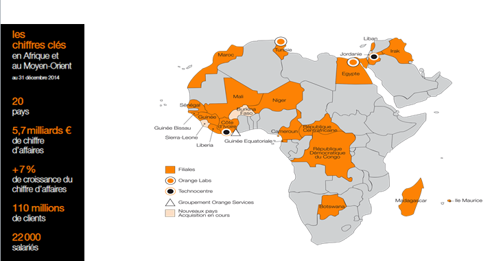

MBAO My Business Avec Orange
MBAO est une Web App créée par Orange en 2015 pour permettre la digitalisation dans le marché MEA des ventes et livraisons en ligne.
Concrétement il s'agit d'une application mobile permettant à un grossiste de mettre en ligne tous ses produits et de les mettre à disposition de ses détaillants. L'application inclut ainsi des choix de mode de paiement (Orange Money, en liquide, ...) et de livraisons (en point de vente, ...). Les interlocuteurs peuvent échanger via un chat, appels audio et visio.
Notre présence au Moyen-Orient et en Afrique

Démo de l'application
MBAO sera disponible pour tous types de smartphones
Technologies utilisées:

WebRTC
Dans les années à venir le WebRTC pourrait s’imposer comme le nouveau blockbuster en matière de communications unifiées sur Internet. Le WebRTC (pour Real Time Communication) va permettre aux navigateurs web de gérer de façon native, sans plugin ou applications à installer, des flux voix, vidéo, etc en Peer to Peer !
Orange Money
En Afrique, Orange Money vous simplifie la vie En Côte d’Ivoire, l’expression « faire un Orange Money » est entrée dans le langage ; elle désigne un transfert d’argent. Lancé en 2008, le service simplifie réellement la vie dans certains pays d’Afrique où les comptes bancaires ne concernent qu‘une minorité d’habitants.
Pilote Bijoux Abidjan
Objectifs de ce pilote B2B : Tester l’appropriation du service par des vendeuses de bijoux. Cible : 10 vendeuses (vente directe one2one ou par réunions de consommatrices Digitalisation du processus achat des vendeuses envers le grossiste et dématérialisation du flux financier. pilote tripartide: ASEO (business owner) – Rand (fabricant de bijoux) -Orange
Avis
De Patrick Fort , Directeur de l'Innovation Societe Generale
De Aristide Gnamba - YAO OCI